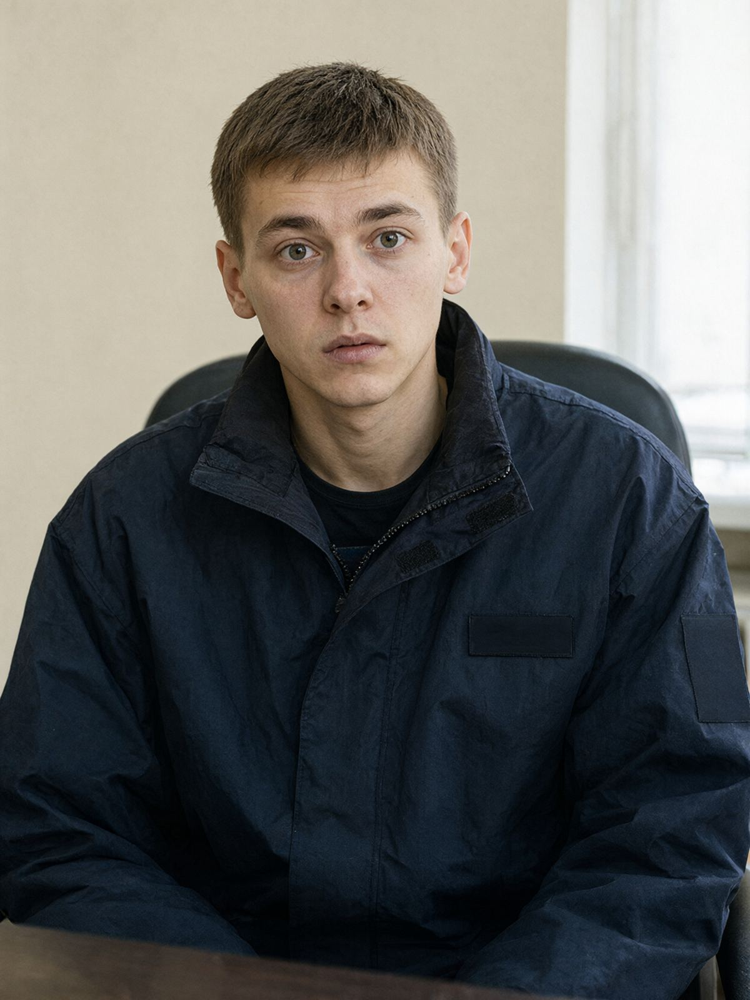

Місто: Івано-Франківськ
Дата: 17.10.2026
Час початку: 10:15 Час закінчення: 10:50
Місце: СУ ГУНП в Івано-Франківській області, вул. Січових Стрільців, каб. 312
Відібрав: майор поліції Волков Д.С., старший слідчий в ОВС СУ ГУНП в Івано-Франківській області
Особа: Ліщук Тарас Андрійович, 22 р., охоронець ТОВ «Лаз-Сервіс» (ЖК «Дем'янів лаз»), студент-заочник ІФНТУНГ (економіка, 4 курс), тел. +380 99 610 44 07.
Особі роз'яснено право не свідчити щодо себе та близьких родичів (ст. 63 Конституції України). Пояснення надає добровільно. Прийшов сам, за викликом, на п'ятнадцять хвилин раніше. Попросив, щоб «шефу не казали, що я тут був», — роз'яснено, що пояснення не є таємними, але й не публікуються.
Питання: Розкажіть про вашу зміну 15.10.
Відповідь: Заступили о 20:00, я і шеф — Руслан Михайлович Дячук. Ми вдвох на нічній, на посту біля в'їзду. Я відкривав шлагбаум гостям, приймав одну посилку для 4-ї секції, робив обхід о дев'ятій. Шеф сидів за пультом, телефон у нього весь час був у руках, хтось йому писав. Все було тихо.
Питання: До котрої ви були на посту?
Відповідь: До пів на одинадцяту. О пів на одинадцяту шеф каже: «Йди, малий, сьогодні тихо, сам досиджу». Я здивувався, бо таке було вперше. Зазвичай навпаки — він іде спати в підсобку, а я сиджу. Але я не сперечався, в мене сесія скоро, я хотів учити.
Питання: Дячук пояснив, що відпустив вас, бо у вас хворіє мама.
Відповідь: (довго мовчить) Він так сказав? Ну, відпустив — то відпустив, хоча мама в мене не хворіє, я шефу такого не казав. Мама здорова, працює в школі, вчителька молодших класів. Не знаю, звідки він це взяв. Може, переплутав з кимось. Тільки ви йому, будь ласка…
Питання: Як ви добиралися додому?
Відповідь: Маршруткою № 31, від зупинки на Пасічній, вона там до одинадцятої ходить. Вийшов з поста о пів на одинадцяту, ще й чекав хвилин десять. Вдома був десь об одинадцятій, може, трохи після — мама ще не спала, гріла мені вечерю. Вона підтвердить. Ліщук Ганна Василівна, ми живемо на Тролейбусній.
Питання: Дячук стверджує, що реєстратор камер «глючить уже місяць» і що канали 5–8 не писали з 23:10 до 01:30.
Відповідь: Реєстратор новий, з весни, ніколи не глючив. Його поставили в квітні, коли міняли камери. Я за пультом часто сиджу — він не зависав жодного разу, при мені точно. Жодних заявок на ремонт я не пам'ятаю. Якщо ввечері 15-го щось поламалось — то вже без мене, після пів на одинадцяту.
Питання: А камера в самому пості?
Відповідь: Є, маленька, біла, на стіні над дверима. Пише на карту пам'яті, щоб ми не спали, — вона ще з весни. «Лаз-Сервіс» її повісив після того, як когось з минулої зміни на фото в Telegram скинули сплячого. Записи з неї забирає шеф, я туди не лажу, в мене й доступу нема.
Питання: Що ви можете сказати про Дячука?
Відповідь: Серйозний. Колишній мент, капітан, — він сам усім каже. Вимогливий, кричить рідко, але як подивиться — то краще б кричав. Ми між собою кажемо, що шеф «завжди при ліхтарі», бо він без ліхтаря на обхід не ходить, навіть удень. Мене не ображав.
Питання: Чи знали ви загиблого Палійчука В.І.?
Відповідь: Тільки в лице. «Танк» його всі знали. Він мені раз каву приніс на пост, без приводу, просто так, — сказав, що в нього залишилась. Нормальний чоловік. Мені його шкода.
З моїх слів записано вірно, мною прочитано.